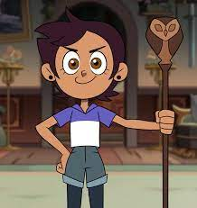
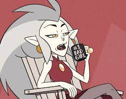

Luz noceda
(main character)
Luz Noceda est une adolescente humaine de 14 ans qui rêve de devenir une sorcière. Elle est audacieuse, déterminée et toujours prête à aider les autres. Elle est également très créative et a un grand sens de l'humour.
.jpg)
L'empereur Belos
L'empereur Belos est le dirigeant cruel et manipulateur des Îles bouillantes. Il est un sorcier puissant qui utilise sa magie pour opprimer les autres et maintenir l'ordre.
Belos est un personnage complexe et fascinant qui suscite à la fois la haine et la compassion. Il est un antagoniste important de la série The Owl House.

Eda Clawthorne
Eda est connue pour sa nature insouciante et son amour de la liberté. Elle est également une mère aimante pour son fils, King.
Eda est un personnage complexe et relatable qui inspire les téléspectateurs de tous âges. Elle est un modèle pour les jeunes qui rêvent de suivre leur propre chemin et qui ne se laissent pas dicter leur vie par les autres.

">
Amity Blight
Amity Blight est une jeune sorcière prodigieuse qui fréquente l'Académie Hexside de la magie et des démons. Elle est connue pour sa nature compétitive et arrogante, mais elle commence à se détendre et à devenir plus amicale au fil de la série. Elle développe également des sentiments pour Luz Noceda, une adolescente humaine qui rêve de devenir sorcière.